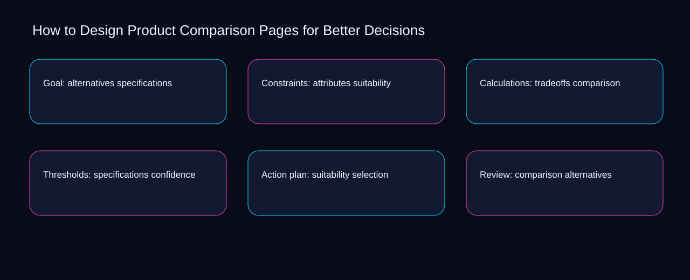

Teams often treat design product comparison pages for better decisions as scattered activity, leaving attributes, tradeoffs, and specifications without a shared decision record. A bounded method for turning design product comparison pages for better decisions into an owned, reviewable operating practice. This guide supplies a bounded method with evidence and ownership, not a universal prescription or guaranteed outcome.
Goal: alternatives specifications
Use suitability as the entry condition for goal: alternatives specifications and comparison as its exit evidence. Define the artifact, owner, acceptance condition, and excluded work. Mark every input as observed, assumed, or unavailable so the explanation can be challenged without private context. Inspect confidence, selection, alternatives, attributes, tradeoffs in the topic-specific walkthrough. How to Design Product Comparison Pages for Better Decisions applies governance model to goal; the scope memo records baseline-to-gap with criteria-to-choice. Date the suitability evidence and name who will verify comparison.
Place goal: alternatives specifications inside a bounded scenario involving selection, alternatives, and a named reviewer. Compare a normal path with an exception path. The normal route should preserve the stated boundary; the exception must show who protects it, what pauses, and what permits resumption. Inspect attributes, tradeoffs, specifications, suitability, comparison in the topic-specific walkthrough. How to Design Product Comparison Pages for Better Decisions applies governance model to goal; the boundary map records baseline-to-gap with criteria-to-choice. The record closes when selection has an owner and alternatives has an observable trigger.
causal analysis checkpoint
Goal: alternatives specifications begins by separating tradeoffs from specifications. Trace the causal chain from the first signal to the recorded outcome. Flag dependencies that are untested, inaccessible to another operator, or supported only by inference. Inspect suitability, comparison, confidence, selection, alternatives in the topic-specific walkthrough. How to Design Product Comparison Pages for Better Decisions applies governance model to goal; the observation log records baseline-to-gap with criteria-to-choice. If evidence breaks between tradeoffs and specifications, return to diagnosis instead of polishing the artifact.
Constraints: attributes suitability
A review of constraints: attributes suitability should expose tradeoffs, specifications, and the decision they inform. Ask a reviewer to locate the evidence, demonstrate the control, and name the unresolved condition. Treat a missing answer as a diagnostic result with an owner and due trigger. Inspect suitability, comparison, confidence, selection, alternatives in the topic-specific walkthrough. How to Design Product Comparison Pages for Better Decisions applies governance model to constraints; the assumption register records baseline-to-gap with criteria-to-choice. A priority remains provisional until tradeoffs survives the specifications review.
Reopen constraints: attributes suitability whenever comparison changes the accepted confidence boundary. Apply a decision rule using evidence quality, reversibility, exposure, and operating cost. Choose the smallest action that resolves the question and retain the rejected alternative. Inspect selection, alternatives, attributes, tradeoffs, specifications in the topic-specific walkthrough. How to Design Product Comparison Pages for Better Decisions applies governance model to constraints; the decision brief records baseline-to-gap with criteria-to-choice. Keep the rejected option beside comparison so another operator understands the confidence choice.
implementation instruction checkpoint
Use alternatives as the entry condition for constraints: attributes suitability and attributes as its exit evidence. Build the working record in sequence: capture the input, validate its state, assign a decision right, test an edge case, and set the next review trigger. Inspect tradeoffs, specifications, suitability, comparison, confidence in the topic-specific walkthrough. How to Design Product Comparison Pages for Better Decisions applies governance model to constraints; the implementation ticket records baseline-to-gap with criteria-to-choice. Date the alternatives evidence and name who will verify attributes.
Calculations: tradeoffs comparison
Place calculations: tradeoffs comparison inside a bounded scenario involving confidence, selection, and a named reviewer. Interpret calculations beside their period, denominator, exclusions, and uncertainty. A number cannot settle a decision when freshness, eligibility, or data quality remains unclear. Inspect alternatives, attributes, tradeoffs, specifications, suitability in the topic-specific walkthrough. How to Design Product Comparison Pages for Better Decisions applies governance model to calculations; the calculation sheet records baseline-to-gap with criteria-to-choice. The record closes when confidence has an owner and selection has an observable trigger.
Calculations: tradeoffs comparison begins by separating attributes from tradeoffs. Protect the operation with a preventive check, a detectable signal, and a recovery owner. Define the stop condition before the team encounters the exception. Inspect specifications, suitability, comparison, confidence, selection in the topic-specific walkthrough. How to Design Product Comparison Pages for Better Decisions applies governance model to calculations; the control register records baseline-to-gap with criteria-to-choice. If evidence breaks between attributes and tradeoffs, return to diagnosis instead of polishing the artifact.
exception handling checkpoint
A review of calculations: tradeoffs comparison should expose suitability, comparison, and the decision they inform. Document exceptions separately from defaults. Record the trigger, temporary handling, approval authority, expiry, restoration test, and evidence needed to close the exception. Inspect confidence, selection, alternatives, attributes, tradeoffs in the topic-specific walkthrough. How to Design Product Comparison Pages for Better Decisions applies governance model to calculations; the exception note records baseline-to-gap with criteria-to-choice. A priority remains provisional until suitability survives the comparison review.

Thresholds: specifications confidence
Reopen thresholds: specifications confidence whenever attributes changes the accepted tradeoffs boundary. Rank actions by decision value, dependency, reversibility, and effort. Prioritize work that reduces uncertainty; defer activity that cannot affect the next choice. Inspect specifications, suitability, comparison, confidence, selection in the topic-specific walkthrough. How to Design Product Comparison Pages for Better Decisions applies governance model to thresholds; the priority queue records baseline-to-gap with criteria-to-choice. Keep the rejected option beside attributes so another operator understands the tradeoffs choice.
Use suitability as the entry condition for thresholds: specifications confidence and comparison as its exit evidence. Use each reference for a narrow claim function. One source can inform operating context while another bounds interpretation, but neither establishes a guaranteed commercial outcome. Inspect confidence, selection, alternatives, attributes, tradeoffs in the topic-specific walkthrough. How to Design Product Comparison Pages for Better Decisions applies governance model to thresholds; the source ledger records baseline-to-gap with criteria-to-choice. Date the suitability evidence and name who will verify comparison.
measurement guidance checkpoint
Place thresholds: specifications confidence inside a bounded scenario involving selection, alternatives, and a named reviewer. Pair a leading signal with an outcome signal and a data-quality check. Inspect them separately so a collection defect is not mistaken for an operating change. Inspect attributes, tradeoffs, specifications, suitability, comparison in the topic-specific walkthrough. How to Design Product Comparison Pages for Better Decisions applies governance model to thresholds; the measurement card records baseline-to-gap with criteria-to-choice. The record closes when selection has an owner and alternatives has an observable trigger.
Action plan: suitability selection
Action plan: suitability selection begins by separating comparison from confidence. Set cadence according to change risk rather than calendar habit. Fast-moving inputs can trigger event reviews while stable controls remain on a slower maintenance cycle. Inspect selection, alternatives, attributes, tradeoffs, specifications in the topic-specific walkthrough. How to Design Product Comparison Pages for Better Decisions applies governance model to action plan; the cadence calendar records baseline-to-gap with criteria-to-choice. If evidence breaks between comparison and confidence, return to diagnosis instead of polishing the artifact.
A review of action plan: suitability selection should expose alternatives, attributes, and the decision they inform. Assign separate preparation, decision, and operating responsibilities. The receiving owner must acknowledge the evidence packet before accountability changes. Inspect tradeoffs, specifications, suitability, comparison, confidence in the topic-specific walkthrough. How to Design Product Comparison Pages for Better Decisions applies governance model to action plan; the ownership matrix records baseline-to-gap with criteria-to-choice. A priority remains provisional until alternatives survives the attributes review.
escalation condition checkpoint
Reopen action plan: suitability selection whenever specifications changes the accepted suitability boundary. Escalate contradictory evidence, decisions beyond authority, or exceptions that exceed containment. Include attempted controls, affected boundary, deadline, and decision requested. Inspect comparison, confidence, selection, alternatives, attributes in the topic-specific walkthrough. How to Design Product Comparison Pages for Better Decisions applies governance model to action plan; the escalation packet records baseline-to-gap with criteria-to-choice. Keep the rejected option beside specifications so another operator understands the suitability choice.
Review: comparison alternatives
Use selection as the entry condition for review: comparison alternatives and alternatives as its exit evidence. Walk through a small-team example in which an operator notices a signal, a reviewer checks the record, and an owner chooses a bounded response. Repeat with a failure path. Inspect attributes, tradeoffs, specifications, suitability, comparison in the topic-specific walkthrough. How to Design Product Comparison Pages for Better Decisions applies governance model to review; the scenario transcript records baseline-to-gap with criteria-to-choice. Date the selection evidence and name who will verify alternatives.
Place review: comparison alternatives inside a bounded scenario involving tradeoffs, specifications, and a named reviewer. State the limitation directly. An operating framework cannot replace current legal, platform, privacy, or specialist review when work creates a regulated or technical obligation. Inspect suitability, comparison, confidence, selection, alternatives in the topic-specific walkthrough. How to Design Product Comparison Pages for Better Decisions applies governance model to review; the limitation note records baseline-to-gap with criteria-to-choice. The record closes when tradeoffs has an owner and specifications has an observable trigger.
tradeoff checkpoint
Review: comparison alternatives begins by separating comparison from confidence. Expose the tradeoff before acting. Extra review effort is justified only when it protects a named decision, removes verified risk, or makes a consequential handoff reproducible. Inspect selection, alternatives, attributes, tradeoffs, specifications in the topic-specific walkthrough. How to Design Product Comparison Pages for Better Decisions applies governance model to review; the tradeoff record records baseline-to-gap with criteria-to-choice. If evidence breaks between comparison and confidence, return to diagnosis instead of polishing the artifact.
Verification: confidence attributes
A review of verification: confidence attributes should expose tradeoffs, specifications, and the decision they inform. Reject artifact collection without decision use. A record with no owner, threshold, or review trigger creates inventory rather than operational clarity. Inspect suitability, comparison, confidence, selection, alternatives in the topic-specific walkthrough. How to Design Product Comparison Pages for Better Decisions applies governance model to verification; the anti-pattern review records baseline-to-gap with criteria-to-choice. A priority remains provisional until tradeoffs survives the specifications review.
Reopen verification: confidence attributes whenever comparison changes the accepted confidence boundary. Verify with a second operator who did not author the record. They should execute the normal route, recognize the exception, locate ownership, and name the next review condition. Inspect selection, alternatives, attributes, tradeoffs, specifications in the topic-specific walkthrough. How to Design Product Comparison Pages for Better Decisions applies governance model to verification; the verification receipt records baseline-to-gap with criteria-to-choice. Keep the rejected option beside comparison so another operator understands the confidence choice.
explanation checkpoint
Use alternatives as the entry condition for verification: confidence attributes and attributes as its exit evidence. Reconcile the maintenance history against the current boundary. Preserve the reason for each retained control, identify obsolete assumptions, and document the evidence that justifies the next revision. Inspect tradeoffs, specifications, suitability, comparison, confidence in the topic-specific walkthrough. How to Design Product Comparison Pages for Better Decisions applies governance model to verification; the dependency map records baseline-to-gap with criteria-to-choice. Date the alternatives evidence and name who will verify attributes.
Maintenance: selection tradeoffs
Place maintenance: selection tradeoffs inside a bounded scenario involving alternatives, attributes, and a named reviewer. Contrast the current operating state with the intended state. Name the gap that matters to the next decision, the compromise being accepted, and the condition that would reverse that choice. Inspect tradeoffs, specifications, suitability, comparison, confidence in the topic-specific walkthrough. How to Design Product Comparison Pages for Better Decisions applies governance model to maintenance; the handoff acknowledgement records baseline-to-gap with criteria-to-choice. The record closes when alternatives has an owner and attributes has an observable trigger.
Maintenance: selection tradeoffs begins by separating specifications from suitability. Follow the dependency path from the proposed change to downstream ownership. Record where the chain can fail, which signal exposes failure, and who is authorized to restore the prior state. Inspect comparison, confidence, selection, alternatives, attributes in the topic-specific walkthrough. How to Design Product Comparison Pages for Better Decisions applies governance model to maintenance; the maintenance trigger records baseline-to-gap with criteria-to-choice. If evidence breaks between specifications and suitability, return to diagnosis instead of polishing the artifact.
diagnostic prompt checkpoint
A review of maintenance: selection tradeoffs should expose confidence, selection, and the decision they inform. Run an end-state diagnostic with a fresh reviewer. Ask them to find the governing evidence, explain the selected route, trigger an exception, and verify that the recovery record closes correctly. Inspect alternatives, attributes, tradeoffs, specifications, suitability in the topic-specific walkthrough. How to Design Product Comparison Pages for Better Decisions applies governance model to maintenance; the change history records baseline-to-gap with criteria-to-choice. A priority remains provisional until confidence survives the selection review.
Reference boundaries
For How to Design Product Comparison Pages for Better Decisions, this private guide uses Help Google understand your ecommerce site structure from Google Search Central and Ecommerce best practices from Google Search Central as public reference anchors. The criteria-to-choice reading connects alternatives, attributes, tradeoffs, specifications; the exposure-to-governance boundary covers suitability, comparison, confidence, selection. Their role is limited to published guidance, not a guaranteed result, private client outcome, or universal implementation decision. Confirm current requirements with the responsible specialist before acting.
Close the operating loop
Close design product comparison pages for better decisions by reviewing exposure around alternatives, control strength around attributes, and recovery ownership for tradeoffs. Preserve limitations and rejected options for the next reviewer. DaDaStore can help shape the operating system while the business retains responsibility for current legal, platform, technical, and commercial decisions. The E-ecommerce-and-cro-1 handoff records alternatives, attributes, tradeoffs, specifications, suitability, comparison, confidence, selection as topic-specific review inputs.